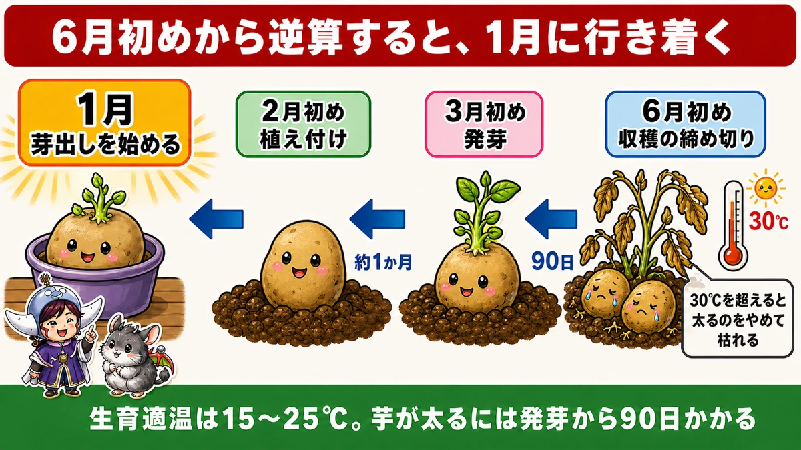
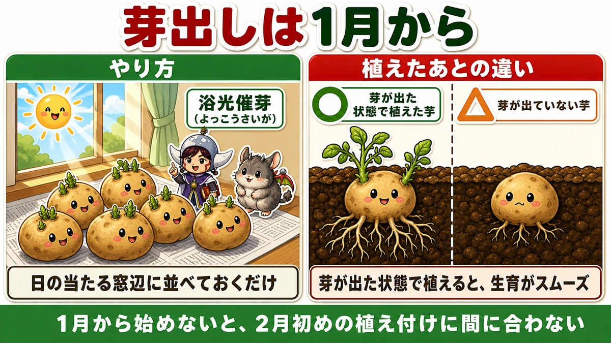
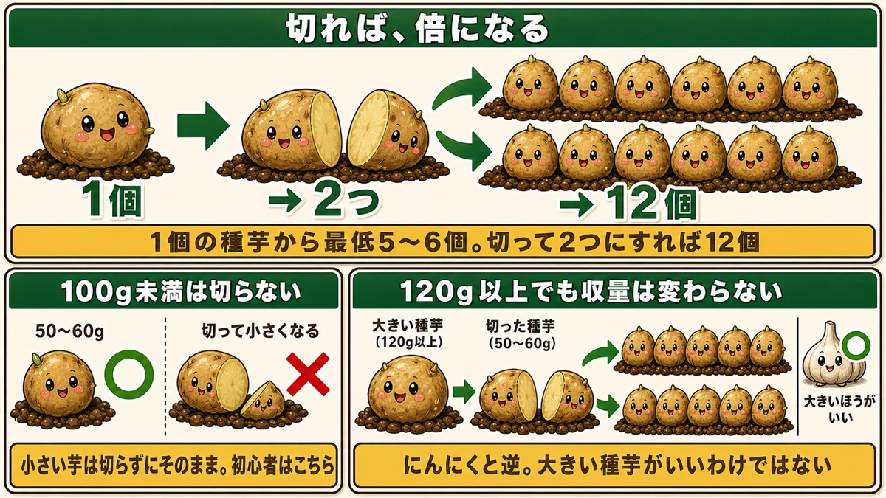
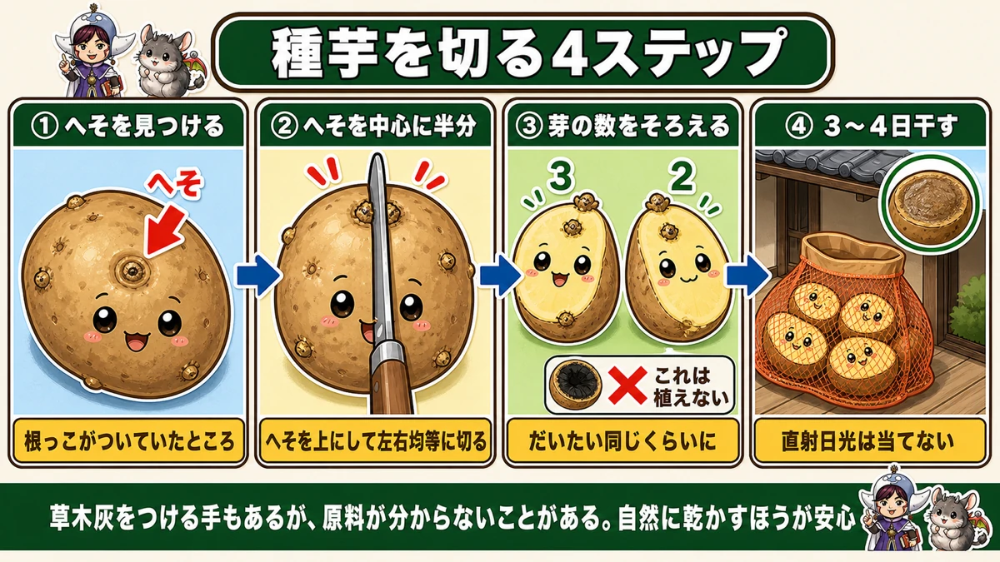
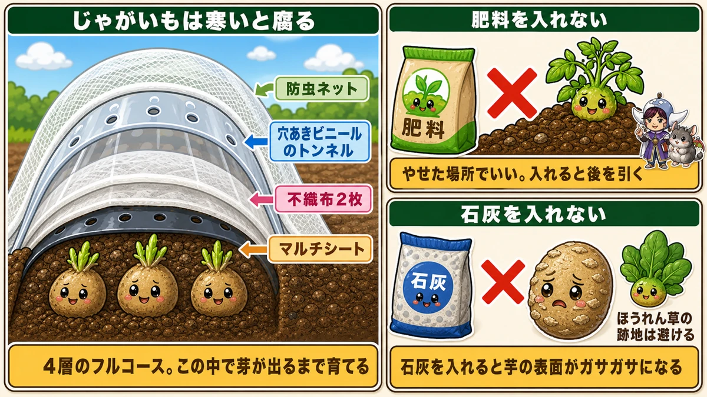
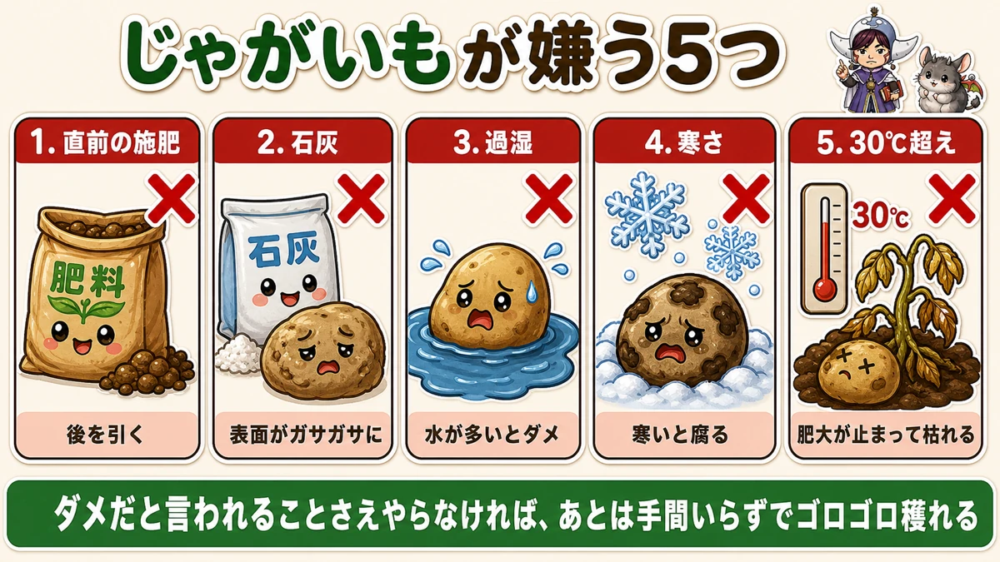

Cut the seed potato and you double the crop 🥔 But never one under 100 g

🥔 "When am I supposed to plant these?"
🥔 "Seed potatoes are expensive — I can't buy many."
🥔 "Bigger seed potatoes are better, right?"
Hello, I'm Eiko. Eight years of growing vegetables organically and without pesticides, and a teaching licence in science.
Two things first:
- Potatoes have a fixed finish date, and everything counts back from it. Start late and you've lost before you begin
- Cut a seed potato and you double it. One tuber can give twelve
But there's a size below which cutting loses you crop instead.
① The deadline is set by heat — work backwards

What this diagram says （図解の文字）
- Count back from the harvest deadline and you arrive at midwinter
- "Start chitting" → "planting" → about 1 month → "emergence" → 90 days → "harvest deadline"
- 30 °C — "above 30 °C"
Potatoes look rugged and are surprisingly particular. They grow best at 15–25 °C (59–77 °F), and dislike both cold and heat.
Why there's a deadline
Above 30 °C (86 °F) the tubers stop swelling, and the plant starts dying back.
So the question is: when does your weather first reach 30 °C? That date is your harvest deadline, and it cannot be moved.
Count back
- Tubers need about 90 days from emergence to fill
- So the shoots must be through 90 days before your 30 °C date
- Emergence takes about a month from planting → plant a month before that
- And you chit them before planting → start about a month earlier again
This countdown is the single most important thing in growing potatoes.
"It's still cold, I'll wait" is exactly how you arrive at the heat with tubers that never filled. I've done it.
② Chitting is just a windowsill

What this diagram says （図解の文字）
- Start chitting early — "light-sprouting"
- "Just lay them out on a sunny windowsill"
- ○ "planted already sprouted" ／ △ "planted unsprouted"
One job: lay the seed potatoes out on a sunny windowsill. In their box, or spread on newspaper — either is fine. After a while, shoots appear.
Planted with shoots already showing, everything afterwards goes more smoothly.
And the reason to start early: the shoots take time. If you want to plant six weeks from now, they need to be started now.
③ One tuber into twelve

What this diagram says （図解の文字）
- Cut it and you double it
- 1 tuber → 2 pieces → 12 potatoes
- "One seed potato gives at least 5–6. Cut into two, that's 12"
- "Don't cut anything under 100 g" — 50–60 g ○ ／ ✗ "cut too small"
- "Small tubers go in whole. Beginners…"
One seed potato planted whole yields at least five or six potatoes. Cut it in two, and each half gives five or six — twelve in total, from one tuber. Commercial growers sometimes cut into three or four.
Where the technique came from
A nice story: birds dug up some seed potatoes, they were chopped up by a tractor working the ground, and every fragment grew a plant. That's how people learned it worked.
But never cut one under 100 g
Only cut tubers of 100 g (3.5 oz) or more. Cut a small one and the pieces are too small, and the yield falls.
And an unexpected fact: above about 100–120 g, a bigger seed potato gives no more crop. So:
- Small tubers (50–60 g / 2 oz) — plant whole
- Large tubers (100 g+) — cut into 50–60 g pieces and you get the same total crop
"Bigger seed is better" is wrong here
The opposite of garlic, where you do choose the biggest bulb. With potatoes, the biggest seed tuber is not the best one.
It's tempting to pick the big ones in the shop, but a small tuber grows perfectly well — and for a beginner, planting small ones whole is the better option, because a cut surface can rot. In a year you can't afford to lose, not cutting is a legitimate choice.
④ How to cut one

What this diagram says （図解の文字）
- Cutting a seed potato: four steps
- ① "find the navel" — "where the root was attached"
- ② "halve it through the navel" — "navel upward, cut evenly left and right"
- ③ "balance the number of eyes" — 3 / 2
- ✗ "don't plant this one"
- Find the navel. A small dimple where the root was attached — the stalk end
- Halve it through the navel. Navel upward, cut evenly down through it
- Balance the eyes. Roughly the same number on each face. Three and two is fine; badly lopsided is not
- If the inside is discoloured, don't plant it — it's already going
- Dry the cut faces for 3–4 days. Planted wet, they rot from the cut
Drying is simple: put them back in the bag they came in and stand it somewhere cool and airy, out of direct sun. After three or four days the cut face has dried into a scab, and it can go in the ground without rotting.
Dusting cut faces with wood ash is another option if you're short of time — but I prefer drying, because cheap wood ash doesn't always say what it's made of, and if you're planting a lot you need a surprising amount of it.
⑤ Prepare the bed early — and don't feed it

What this diagram says （図解の文字）
- Potatoes rot in the cold
- From the top down: insect netting ／ perforated plastic tunnel ／ two layers of fleece ／ mulch film
- "Four layers, the full works. Grow them under this until they emerge"
- ✗ "no fertiliser" — "poor ground"
Build the beds well before planting. Warming the soil in advance improves growth afterwards.
Don't add fertiliser
This surprises people. Pick a poor spot, and add nothing. Two reasons:
- Fertiliser added now has consequences later — it doesn't break down in time and interferes mid-season
- And if you have no poor ground, still don't feed it. Potatoes grow anyway
Don't add lime either
Lime gives you rough, scabby skins. Potatoes prefer soil on the alkaline side, and yet lime is still the wrong move — the two facts sit together oddly, but there it is.
Related: avoid ground that grew spinach, because spinach ground has been limed.
And being in the potato family, avoid ground that grew tomatoes, aubergines or peppers if you can.
Cover them properly
Potatoes rot when cold, so protect them thoroughly:
- Mulch film
- Two layers of fleece
- A perforated plastic tunnel
- Insect netting
Excessive-looking, and growing them under this until they emerge makes the cold part of the season straightforward. You're planting early, so you defend accordingly.
⑥ Varieties
Shops can carry thirty kinds. What to look for:
- A reliable heavy cropper — bred in a cold region, big, productive, easy. If in doubt, this
- A heat-tolerant red-skinned type — bred in a warm region. Given the way summers are going, this matters: it doesn't die back early and fills slowly
- A speciality type — sweet, chestnut-like, excellent in salads. Lower yielding and smaller, so it's for growing something different rather than for volume
Five things potatoes hate

What this diagram says （図解の文字）
- Five things potatoes hate
- 1 "fertiliser just before" — "it has consequences later"
- 2 "lime" — "rough, scabby skins"
- 3 "waterlogging" — "too much water is bad"
- 4 "cold" — "cold makes them rot"
- 5 "above 30 °C" — "swelling stops"
And here's the consolation: avoid the things you're told not to do, and the rest is very little work for a lot of potatoes.
A potato is a subtraction crop, not an addition one. Not doing the unnecessary beats doing the helpful.
Science bit: why does cutting work? 🥔🔬
Cut a seed potato and each piece grows. Think about it and it's odd — cut a radish seed in half and nothing germinates. Same for a tomato seed. So why can a potato be cut?
Because a potato is a stem, not a seed
A potato is a swollen underground stem. Not a root — a stem.
And a stem has nodes, and every node has a bud. Those dimples on the surface are the buds at the nodes.
So cut it up and, as long as each piece has a bud, each piece can become an independent plant.
A seed is different: it holds one complete set of instructions for one individual. Halve it and you have half a set, which is useless.
To sum up
- ✅ Above 30 °C the tubers stop swelling — that date is your deadline
- ✅ 90 days from emergence, a month from planting to emergence, chit before that
- ✅ Chitting is just a sunny windowsill
- ✅ One tuber gives 5–6; cut in two, twelve
- ✅ Never cut anything under 100 g. Above 100–120 g, bigger gives no more
- ✅ Small tubers go in whole — and cutting risks rot
- ✅ Cut through the navel, balance the eyes, dry the faces 3–4 days
- ✅ No fertiliser, no lime. Avoid ground that grew spinach or the potato family
- ✅ Cover them well until they emerge — cold makes them rot
- ✅ A potato is a stem, which is why cutting works
You don't have to do all of it. Put your seed potatoes on a windowsill and leave them. That's the start of the whole countdown 🥔
Thank you for reading!